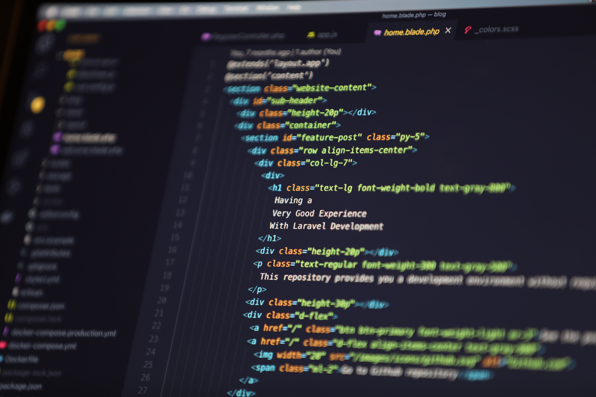

About
Hello, my name is Leigh. I'm an old women in her 30s who is studying I.T. at uni in Australia; online.
I've made it through the first year of study, and now I'm trying to push myself a little further.
This learning journal is an attempt to increase my skills by creating a project for myself every week based on my learning material. As a full-time student, I am studying 2 subjects per study block. So I'll be producing 2 mini-projects/week.
a little bit about me... I was not someone who 'grew up with computers' - though I did recently install dosbox and the games gave me insane flashbacks to a period in my life I had no idea still lived in my head. I have a degree in music, I enjoy the horror genre and hobbies revolving around crafting. I am generally a skeptical person, but I frequently entertain the possibility that ghosts and fairies might actually exist. And, when I started learning HTML 2 years ago my socks were blown right off.
It's been a pretty steep learning curve, but I have become quite enamoured with computers and programming and its etceteras.
I'll probably come back and edit this later. I just wanted to get this website up and running, because I tend to procrastinate on these things.
Anyway, love you! BYEEEEEEEEEEEEEEEEEE.